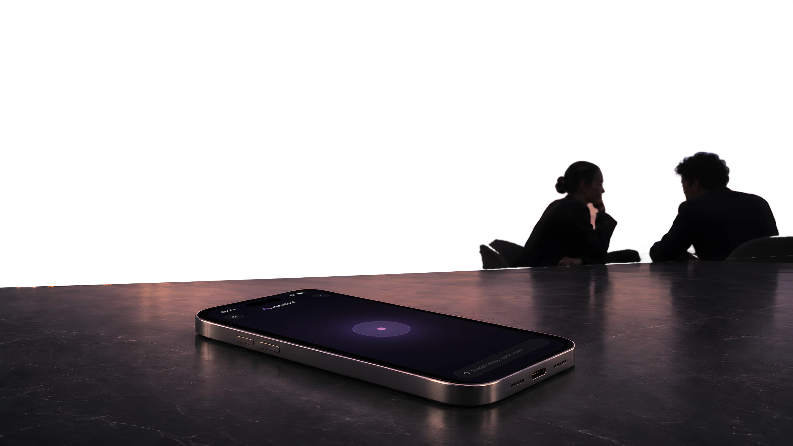
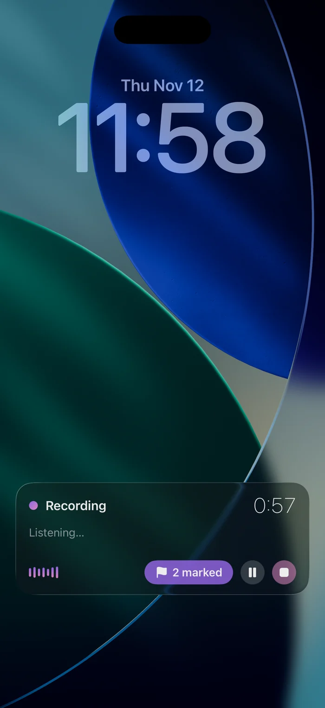
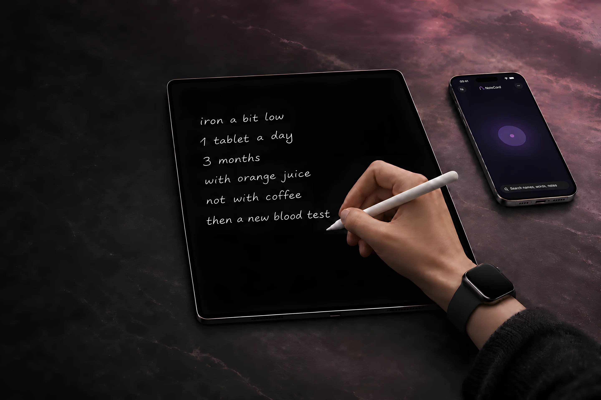

You’re still writing. They keep talking.
NoteCord records and transcribes on your device. Read back what you couldn’t write down while listening.

NoteCord

You’ll see the price in the App Store soon, in your own currency.
NoteCord records, transcribes and summarizes conversations on your iPhone or iPad. Your recordings and text stay on your device.
NoteCord records and transcribes on your device. Read back what you couldn’t write down while listening.
Record with NoteCord. The audio stays on your device.
NoteCord transcribes your conversation on your device. Read back what was said.
One tap on the flag during the conversation. Later you tap it and hear it, from just before.
Type on your iPhone or write with Apple Pencil on your iPad.
Recording and transcription on your device. No server of ours.
Read the summary and next steps on your device. Summaries require Apple Intelligence.
“What exactly did the doctor say?”
You sat beside your mum. You heard it all. At home, she asks what the doctor said. You can’t remember the exact words.
Search names, words, notes
GP, blood test results
0:00
saved on this iPhone
Your notes
00:48Marked
01:15not with coffee!
Type a note…
NoteCord hearsFirst version
GP, blood test results
Nov 2, 2026 at 9:54 AM · 12 min
Personal
SummaryTranscriptMy notes
You marked
In short
Your iron is a little low. Everything else looks fine. One iron tablet a day for three months, with orange juice, not with coffee or tea. Then another blood test.
Written by AI on this iPhone. Summaries require Apple Intelligence. Check it before you share it.
To do
Pick up iron tablets at the pharmacy
Another blood test in three months
What the doctor told your mum.

The conversation is over. What did you promise to do?
The example that made it click.
The story your mum told at the table.

Who will do what.

Your recording stays visible on the Lock Screen and, on supported iPhones, in Dynamic Island. Tap the flag on your Lock Screen to mark a moment.

Search all your conversations with a word you remember. Keep them in folders for each project or client.
On iPad, tap your handwritten note to hear what was being said at that moment.

NoteCord never sends us your recordings. You decide whether to share them.
Sent to Apple
App Privacy
Data Not Collected
The developer does not collect any data from this app.
0 connections. 0 bytes sent.
Measured in Apple’s iPhone simulator during recording, transcription and summarisation.
Record without limits and transcribe on your device for free. Pro adds on-device summaries.
Summaries require Apple Intelligence
You’ll see the price in the App Store soon, in your own currency.
For all your conversations
NoteCord is awaiting Apple review. Follow the release and record your next conversation soon.
You’ll see the price in the App Store soon, in your own currency.